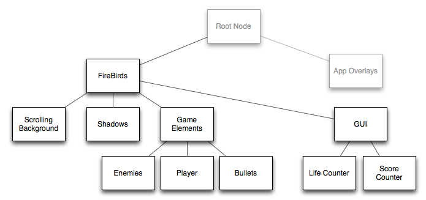

Diving In: The Firebirds Sample¶
This tutorial introduces libavg programming by means of the sample Firebirds. This sample is a small 2D Shooter similar to "1942: Joint Strike": The player pilots a World War II fighter, shooting at enemy fighters and dodging them while the landscape scrolls vertically below the planes. Firebirds is based on XNA tutorial code developed by Alfred Bigler and published in the German magazine c't. The Firebirds Python and C++ code was written by Thomas Schott. In the tutorial, we will go through the basic structure of a libavg app, including initialization, the update loop and general scene structure. We'll also cover deriving your own classes from libavg classes and introduce libavg plugins written in C++.
The complete finished firebirds code can be found in the libavg distribution under src/samples/firebirds (or online), with images, videos and sounds under media/ and the plugin source code in the plugin/ subdirectory. The libavg code for the game is under 500 lines long - half as many as the original XNA code, even though we've added code to generate shadows of the planes on-the-fly. In addition, we detect collisions between two objects on the screen in a pixel-precise way using a simple libavg plugin. The tutorial assumes that libavg is already installed on the computer.
As development environment, you can use either the PyCharm IDE or the command line and an editor of your choice.
App Structure¶
Like all libavg applications, Firebirds makes use of the App class. This class is instantiated in the last line of the file firebirds.py:
1 app.App().run(FireBirds(), app_resolution='1280x720')
This line and an empty FireBirds class are enough to open a 1280x720 window and run the libavg main loop until the Esc key is pressed. The app has several command-line parameters (try starting it with --help or --app-fullscreen=True) and debug keys ('?' shows a list).
In libavg, the main loop (for game programmers: 'Game Loop') is handled internally by the library, which calls Python functions in application code whenever certain events occur. The graph on the right shows the control flow in the application. In Firebirds, these Python functions are located in the FireBirds class.
Initialization¶
onInit() is called once at program start, directly after the window has been opened. In it, the scene is initialized and media such as video and sound clips as well as images are loaded. Of course, the scene can be changed and content loaded later as well.
Content in libavg is stored in a tree structure, the so-called scene graph. This tree contains all media elements (called Nodes) along with the information necessary to render them - such as position, size and opacity. Among others, there are predefined Node classes for images, text and video as well as a number of vector graphics classes. Similar to html, the graph is structured using DivNodes.
The application programmer can derive classes from libavg Nodes, and these can also be inserted into a scene graph. In our case, for instance, the aircraft are defined in a separate class, with two derived classes for the player's and enemy aircraft. Other elements in the scene graph include bullets, a scrolling background, and the components of the heads-up display such as the score, lives left and a gun heat gauge:

Here are the parts of the onInit() function that create the initial scene graph:
1class FireBirds(app.MainDiv):
2 def onInit(self):
3 self.__gameMusic = avg.SoundNode(href='Fire_Birds.mp3', loop=True,
4 volume=0.75, parent=self)
5 [...]
6 self.__shadowDiv = avg.DivNode(parent=self)
7 self.__gameDiv = avg.DivNode(size=self.size, parent=self)
8 self.__guiDiv = avg.DivNode(parent=self)
9 [...]
10 self.__player = PlayerAircraft(self.__shadowDiv, gunCtrl, parent=self.__gameDiv)
11 [...]
12 self.__gameMusic.play()
Game Flow¶
Once onInit() has been called, the application enters the main loop. In the main loop, events are handled, the world state is updated and the screen is redrawn. Events from input devices (keyboard, mouse, touch, etc.) and timers are handled in callbacks that the application defines, such as __onKeyDown() and __onKeyUp(). In __onFrame(), the application calculates a new world state.
The actual rendering is handled internally by libavg. By default, updates in libavg are synced to screen updates. Usually, these take place 60 times per second, so there are 16.7 milliseconds available for one iteration of the game loop. If the loop takes longer, we miss a screen update and there is a chance the game will stutter.
In addition, Firebirds uses two functions that it calls when the game starts (__start()) and when the player has no more lives left (__stop()). Subscribing to the ON_FRAME event and deregistering is also done in these functions, while subscribing to keyboard events happens in onInit(). The subscribe() calls shown below cause libavg to call the named functions whenever an event occurs:
1class FireBirds(app.MainDiv):
2 def onInit(self):
3 [... Initialize scene graph ...]
4 self.__start()
5 player.subscribe(player.KEY_DOWN, self.__onKeyDown)
6 player.subscribe(player.KEY_UP, self.__onKeyUp)
7 [...]
8
9 def __start(self):
10 [...]
11 self.__frameHandlerId = player.subscribe(player.ON_FRAME, self.__onFrame)
12 [...]
13
14 def __stop(self):
15 player.unsubscribe(player.ON_FRAME, self.__frameHandlerId)
16 self.__frameHandlerId = None
17 [...]
Firebirds uses the following callbacks:
1 class FireBirds(app.MainDiv):
2 [...]
3 def __onKeyDown(self, event):
4 [...]
5 def __onKeyUp(self, event):
6 [...]
7 def __onFrame(self):
8 [...]
In our application, __onKeyDown() and __onKeyUp() functions only keep track of the current key states. Actions resulting from key presses are handled during __onFrame(), in PlayerAircraft.update(). __onFrame() calculates a new world state: It moves some Nodes and creates and deletes others. All game logic is here, collisions are detected, points are counted, etc.. The time delta between one frame and the next is always available using Player.getFrameDuration() and used to calculate movement. All game elements are positioned in accordance with the time elapsed. The alternative - moving them a fixed distance per frame - should be avoided, since that would cause the gameplay to become faster or slower depending on the capabilities of the computer. Worse, if syncing to screen updates is off, the game might update so quickly that the player has no chance to react.
The PlayerAircraft Class¶
Elements in a libavg scene graph are derived from the Node class. libavg provides a number of derived Node classes for images, videos, etc., and the application can derive it's own classes as well.
As an example, we'll go through the PlayerAircraft class. It's derived from _Aircraft, which is in turn derived from DivNode, so it can be inserted into the scene graph and will be rendered each frame along with the rest of the scene. By themselves, DivNodes are invisible, but they can have visible children. Since an invisible aircraft makes for bad gameplay, the _Aircraft class creates several nodes for the visuals and adds them as child nodes into the tree. The most important one is a VideoNode that shows the actual airplane in motion. Since libavg is able to start and stop videos as well as loop them practically instantaneously, this is the easiest way to create moving images of game elements. The videos have an alpha (transparency) channel so they blend seamlessly into the background. If the plane explodes, a second video containing the explosion is played. Shadows are handled here as well, but placed in a separate layer in the scene graph so they're behind all aircraft. Shadows are ImageNodes with an added blur effect.
Collision detection¶
Detecting collisions between aircraft in a pixel-precise way would be too slow if it were done in Python. For this reason, we implemented a small libavg plugin - a C++ library that extends libavg. The collisiondetector plugin defines a new class that is exposed to python, the CollisionDetector. It is initialized with two bitmaps, and when detect() is called, it compares the bitmaps pixel-by pixel to see if any non-transparent pixels are at the same position. If so, we have a collision.
Conclusion¶
This tutorial has covered many of the things necessary to build general libavg apps: The lifecycle, main loop and scene graph are the same whether you're building a scrolling game or a serious application. The same goes for deriving Node classes, reacting to input events and handling application state changes. Of course, we could only introduce a few of the libavg features. We've missed a lot of interesting things, such as gesture support (as well as touch input in general), offscreen rendering, masking and other effects.
So, there should be nothing preventing you from writing your own libavg apps at this point and updating your knowledge as you go.